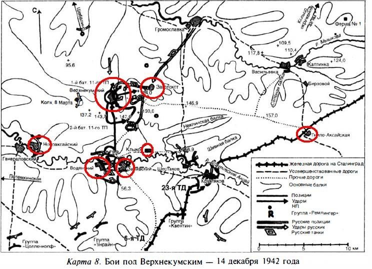

14 декабря 1942 года
Источник: Волгоградская правда от 12 декабря 1982 года
С утра 14 декабря на Котельниковском направлении продолжались ожесточенные бои. Противник, форсировав реку Аксай, стремился развить успех в районе хутора Верхне-Кумский, который стал основным узлом борьбы. Отсюда шли наиболее удобные дороги к Сталинграду. Выдвинутый навстречу наступающим войскам противника 4-й механизированный корпус Вольского завязал бой в районе Верхне-Кумского, а 13-й механизированный корпус Танасчишина ударил южнее у разъезда Бирюковский. 14 декабря было началом продолжавшегося три дня танковог сражения… одного из самых больших и ожесточенных танковых сражений Второй мировой войны.
В тот же день, в районе Рычковский перешли в наступление войска 5-й ударной армии.
14 декабря в 22.30 минут директивой на имя А. М. Василевского Ставка потребовала, ввиду изменившейся обстановки на юге, осуществление первого этапа операции «Кольцо»: главная задача наших южных войск, - говорилось в директиве Ставки, - разбить Котельниковскую группу противника, силами командующего 51-й армией Н.И. Труфанова и командующего 2-й гвардейской армией Р. Я. Малиновского в течение ближайших дней запять Котельниково и закрепиться там прочно.
Карта
